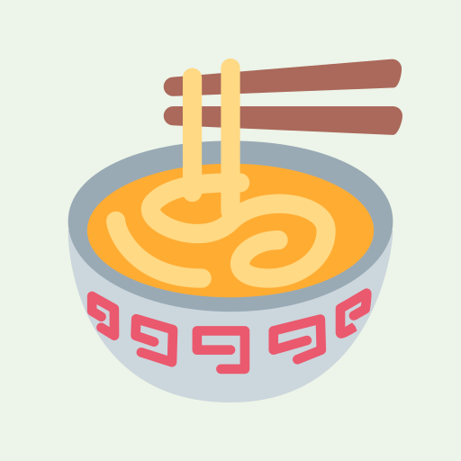
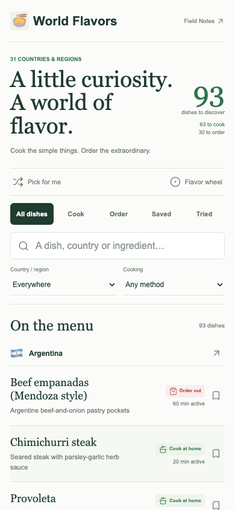
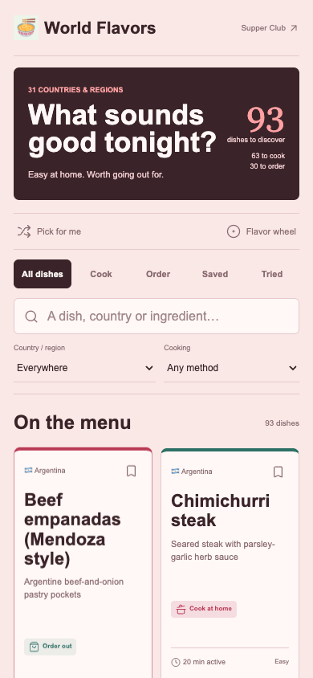
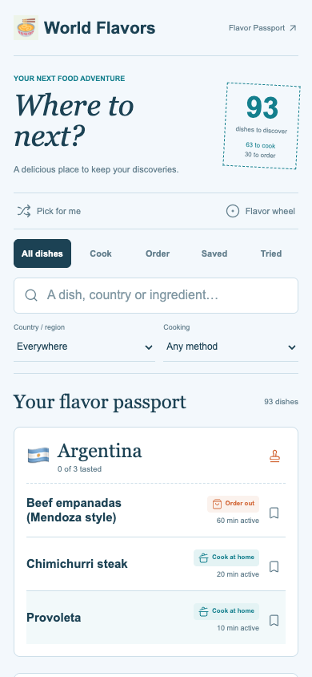
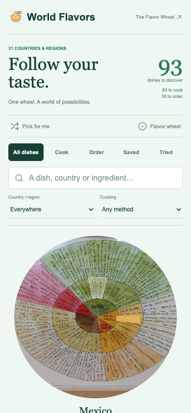
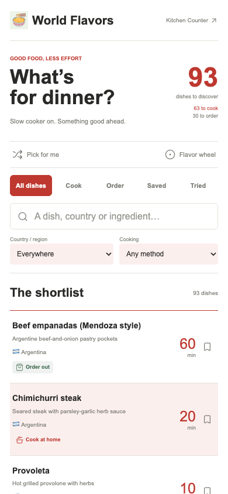

WORLD FLAVORS
Five ways in.
Same 93 dishes. Five different flavors.
01
02
03
04
05

Field Notes ↗
A quiet country notebook. Green ink, generous lists, and a little room for curiosity.

Supper Club ↗
Bold type and a cherry-colored menu. Browse dishes like you’re choosing dinner.

Flavor Passport ↗
A little blue passport to the dinner table. Collect countries, keep notes, find the next stop.

The Flavor Wheel ↗
The original wheel takes center stage. Follow a country straight into something delicious.

Kitchen Counter ↗
A crisp, practical shortlist. Less browsing, more Instant Pot. Built for deciding what’s next.